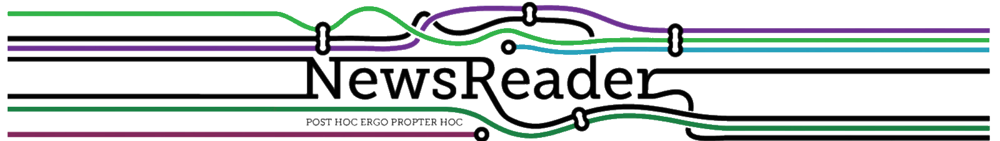
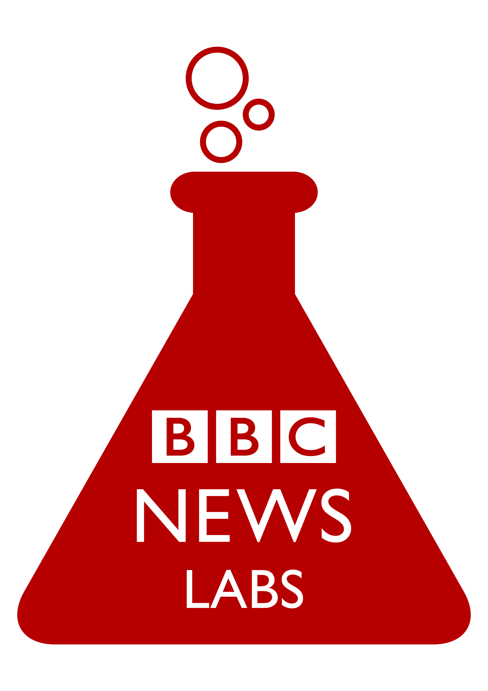

Notes on Modular News
Projects to further investigate

http://www.newsreader-project.eu
Reads massive streams of news [English, Spanish, Italian & Dutch]
Extracts
what
happened,
who
was involved,
where
&
when
Information is represented in the form of billions of Semantic Web triples
Stored in KnowledgeStore that supports reasoning
NewsReader technology is used in almost 40 follow-up projects
See also:
https://github.com/newsreader
Summary PDF
Software modules description & links
http://summa-project.eu/
Development objectives
Scalable and extensible media monitoring platform
High-quality / richer tools for analysts & journalists
Extensible automated knowledge base construction
Multilingual & cross-lingual capabilities
Sustainable, maintainable platform & services
See also:
https://github.com/summa-platform
https://bbcnewslabs.co.uk/projects/summa/

https://bbcnewslabs.co.uk/projects/
Extensive project zoo with some interesting highlights:
Structured Journalism project
Atomised News
→
Object Based Broadcasting
The Juicer
News aggregation and content extraction API
Online Content Toolkit (OCTO)
Media editing, repurposing & augmentation based on intelligent analysis
Language Technology
EuroVOX
Open ecosystem for transcription and translation
[EU-wide collaboration / EBU]
https://newsinitiative.withgoogle.com
Will have as much impact on the news industry as its former strategic partnerships had on the travel industry before.
It's a little difficult to find substantial details.
https://support.google.com/news/publisher-center
https://developers.google.com/news/assistant
See also:
Critical reporting on netzpolitik.org
There are lots of projects out there, but these are definitly worth a closer look.